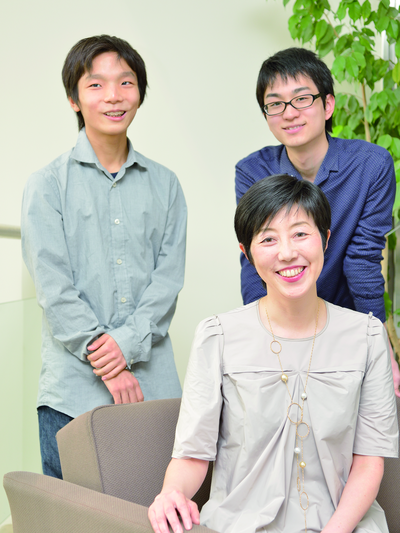

若い世代が語る
東ロボプロジェクトへの期待
AI 研究の挫折を知らない若い世代の研究者の卵たちは、「東ロボ」プロジェクトをどのように受け止めているのだろうか。昨年、東大受験を突破した松村さんと、 高校生ながら「東ロボ」に参加している小松さんを迎え、客観的な立場から、そして実際に携わっている立場から、それぞれプロジェクトについて興味を抱いて いる点と、将来への期待を聞いた。
ロボットが受験したら
数学は目標達成、
国語では苦戦？
新井 先日、東北大学にいる知り合いから、「工学部の学生に将来かかわってみたいプロジェクトを尋ねたところ、『東ロボ』を挙げた学生が複数いた」と聞きまし た。自然言語処理や数学を専攻する学生でなくても、広く関心をもってくれているようです。本日は、このプロジェクトについて若い世代の意見を聞いてみたい と思います。お二人が「東ロボ」を最初に知ったきっかけは、どのようなものでしたか。
松村 私は東大で新聞サークルに所属しており、大学からのニュースリリースで知りましたが、実はそのときは特別な興味を抱きませんでした。新井先生については、 2011年に数学の雑誌に掲載されていたインタビューを読み、理数系の課題を言語化するという考え方が自分の興味ととても近いと感じ、印象に残っていまし た。それでこの春、東大新聞で新井先生に取材させていただき、改めてこのプロジェクトについてお聞きして、その面白さに気づいたところです。
小松 僕はプロジェクトが立ち上がった当初、テレビや新聞のニュース、「NHK スペシャル」で見て、すごいな、こういう世界があるんだ、と驚きました。今は高2ですが、中1 でプログラミングを始め、中3から人工知能研究に興味をもって自然言語処理に取り組んでいたので、「東ロボ」にも参加できるならしたいなぁ、と。実は自然 言語処理を始めて1カ月経ったとき、言語処理学会に参加したかったのですが、親に反対されたんです（笑）。でも、自分で勉強を続けて翌年は参加し、その流 れで「東ロボ」にもかかわらせていただいています。
新井 現在はプログラミングに必要な計算パワーやデータ、モジュール等がオープンソースで入手できる環境があり、やろうと思えば誰でも始められるわけです。だから、小松さんのような高校生がいても不思議はありません。Web 時代ならではですね。
——松村さんは昨年、東大を受験したばかりですが、ロボットは東大に受かると思いますか。
松村 受かると思います。国語はわかりませんが、数学はパターンを理解してしまえば、それほど難しいものではありませんから。
——小松さんは、プロジェクトに参加している立場からどう思いますか。
小松 プロジェクトに参加したのは自分のテストの点も上がるのではないかと思ったこともあるのですが、少なくとも、自分の受験勉強の役には立っていません （笑）。2016年のセンター試験における東ロボの目標達成は科目によると思います。国語などは解く筋道を考えるのも難しいので。
新井 確かにどの科目をとっても課題山積ですが、「できる」と思うことが大切だと思うんですよ。たぶんこれだけの人数の研究者が「今回はできるんじゃないか」と思ったということは、できる条件が整ってきつつあるということだと思いますから。
人工知能研究の魅力は
人間を理解できること
——「東ロボ」のどういう点に興味がありますか。
松村 人工知能研究は、「人が考えるとはどういうことか」という問いを数理的に言語化する活動ですよね。そこが面白いと思います。
新井 人間の知的活動のどこが機械化可能であるかは、デカルトやホッブズの時代から哲学的に捉えられてきた問題です。チューリングが計算機の理論をつくった20 世紀前半、この問題は哲学を離れ、工学分野の問題として捉える枠組みができました。そこから人工知能研究が進んだのですが、1980年代にやや大きな挫折 がありました。当時はまだ計算力が弱く、データもなく、環境が十分に整備されていなかったのですね。それで課題が細分化されていきましたが、この問題はお そらく、30 年に1 回統合し、その時代の技術でやれるところまでやり、次の時代につないでいくべきものだと思います。ここで一度、統合して考え、できることとできないことを 洗い出す。できなかったことは、30年後まで寝かせておけばよいのです。
小松 人工知能の面白さは、それをつくることで人間がわかること。人間にとっては本当に簡単な問題でも、それについてどう思考しているのかはまだわかっていませ ん。僕は神経科学や認知科学も勉強しているのですが、人工知能をつくることで、それらの分野についても解明できたらと思っています。失敗しても、それを教 訓に先に進めるのもいいですね。
松村 それに、もしセンター試験が突破できれば、人工知能のキャパシティが向上していることの証明にもなりますよね。それは多様な分野に応用でき、社会に成果を還元していくことにつながるのではないかと期待しています。
スモールデータで精度を上げる
日本ならではのチャレンジ
松村 私は将来、数学に進むか物理に進むかで迷っていますが、物理の場合、モデリングをして問題に対するおおよその答えを出していくのに対し、数学は目の前の問いに、その場で完全な答えを出せる。そこにとても魅力を感じています。
新井 それが数学ならではの“格好よさ”ですね。私は「東ロボ」をリスクヘッジプロジェクトと呼んでいます。人間の学習能力にあたる機能を人工知能にもたせよう とするとき、データ量に対して対数的にしか精度が向上しないため、精度向上のためにはビッグデータが必要となります。しかし、日本国内の学術機関だけで必 要なビッグデータを集めるのは難しい。ですから、スモールデータで精度を上げられる方向性の研究をしておく必要があるのです。入試データは過去20年分を 集めても、とても小さなデータ量です。スモールデータから精度よく推論する研究は、世界の潮流からは外れますが、非常に重要ですし、“格好がよい”もので す。これをぜひ、若い人たちに経験してほしいですね。
松村 人工知能の研究で人間の脳そのものがつくれるわけではありませんが、100年後にはどうなっているのか、果たして人間の知能を超えてしまっているのか、とても気になります。
新井 人工知能研究が進むことで、人間の本質がよりはっきりしてくるでしょう。私はこのプロジェクトに、かつての挫折を知らない世代に新鮮な気持ちで取り組んで もらいたいと思っています。オープンプラットフォームなので、誰でも参加できます。小松さんも取り組むために入試問題をダウンロードしたのですよね。
小松 はい、これから何にどう取り組むか考えているところです。情報検索など、科目に限らず使えるプログラムを改善していきたいです。
新井 ともにチャレンジしていきましょう。
（取材・文＝桜井裕子）

小松弘佳（左）
東海大学付属望星高校 2年
松村泰宏（右）
東京大学 理I 2年
新井紀子
国立情報学研究所 社会共有知研究センター長
情報社会相関研究系 教授
「東ロボ」プロジェクトディレクター